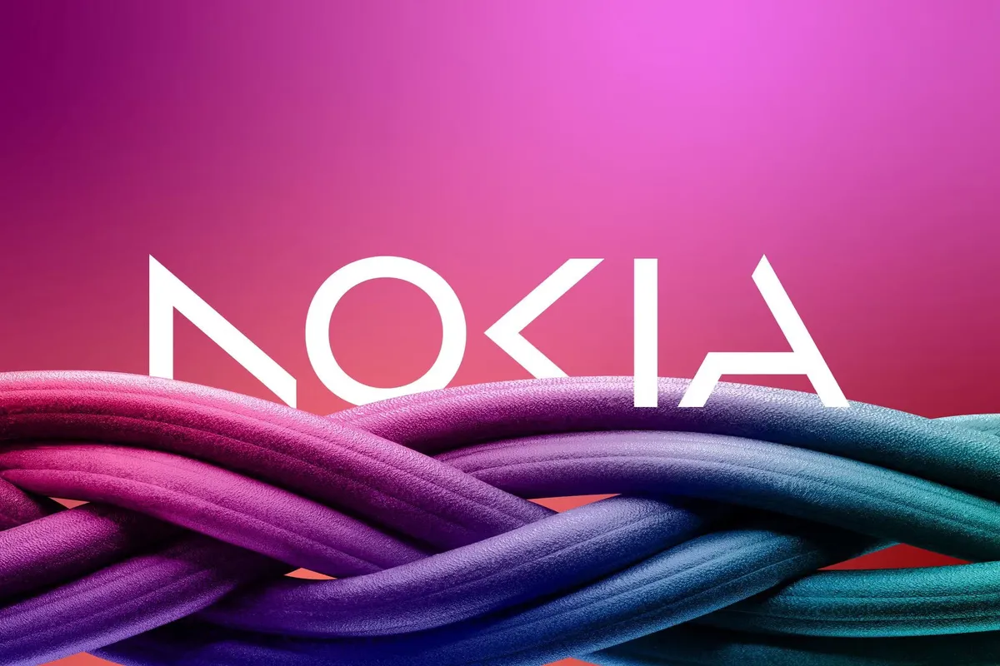

Overview
I led a project to revamp a section of Nokia’a website in line with the company's fresh design standards.
My role involved research, feature ideation, refining the user interface and experience, optimizing content, and crafting
visually engaging designs. The project's goal was to elevate usability, organize information effectively, and maintain
visual consistency, leading to increased productivity and user satisfaction.
This project was about establishing a centralized medium that enables members to contribute and access this
knowledge in an organized and good user experience. By creating such a hub, developers can collaboratively share their insights,
fostering efficient knowledge exchange and cultivating a stronger sense of collaboration.
Challenge
How might we create a dynamic and interactive community space on Nokia's internal website to enhance
collaboration and engagement among developers?
Research
During the research phase of the project, my focus was on comprehensively understanding best practices and
gathering inspiration aiming to enhance user engagement and collaboration. This involved a thorough analysis of multiple design
dimensions including layout, navigation, content presentation, visual aesthetics, and interactive components. The research
process can be outlined in the following stages:
Firstly, I delved into comprehending the core problem space which revolved around establishing an interactive
and collaborative platform for developers. To achieve this, I engaged in conversations with developers, content heads, and product
line managers. Given the open-ended nature of the task, it was imperative to gain a deep understanding of the domain.
Secondly, a critical step involved understanding the specific audience I was designing for - developers. As the
target users were developers, the design features had to be tailor-made to cater to their needs, with functionality taking precedence
over aesthetics. This departure from the typical agency-type work, that I do at school posed an interesting challenge, requiring
dedicated research on designing for developers.
Following that, I embarked on an inspirational journey, meticulously curating an array of design elements and
interactive functionalities that resonated with the objectives of this project. This curated collection served as a pivotal
reference point to inform the subsequent design phase.
Lastly, I honed in on the visual aesthetics of the existing Nokia websites, thoroughly studying aspects such as
color schemes, typography, iconography, and imagery. This analysis aimed to discern the impact of these design components on overall
appeal and user experience, providing valuable insights for the design direction.
In essence, the research process encompassed an in-depth exploration of the problem landscape, a focused understanding
of the developer audience, a proactive pursuit of design inspiration, and a comprehensive evaluation of visual aesthetics across Nokia's
online platforms. This multifaceted approach culminated in a well-rounded foundation for the subsequent design endeavors.
Information Architechture
Subsequently, I delved into the realm of Information Architecture, aiming to establish a foundational structure for the entire platform, with a
particular focus on delineating the specifics of the new feature. This strategic approach enabled me to engage in experimentation and
exploration, granting me the opportunity to manipulate various elements that could potentially be incorporated.

Wire framing
Wire framing played a pivotal role in advancing the project, emerging as one of its most critical phases. This stage
marked a significant transition, as it transformed abstract concepts into tangible visual representations. These wireframes became the
blueprint that guided the subsequent design and development processes. The wireframes underwent thorough scrutiny from an extended team
comprising UX experts, developers, and Product Lifecycle Managers (PLMs). This diverse input brought fresh perspectives to the table and
provided invaluable insights for further refinement. The collaborative nature of this evaluation fostered a holistic understanding of the
feature's potential and limitations.
Feedback from the UX team ensured that the user journey was intuitive and logical, enhancing overall user experience.
Developers contributed their technical insights, ensuring that the proposed designs were feasible and aligned with the platform's
capabilities. PLMs provided valuable input from a strategic standpoint, ensuring that the feature aligned with the broader goals and
objectives of the project. Wire framing also facilitated ideation. As the team collectively examined the wireframes, innovative ideas emerged,
leading to potential enhancements and optimizations. These discussions sparked creative solutions that might not have been apparent
at earlier stages.
Incorporating this feedback-driven wire framing process not only fortified the feature's design but also cultivated a
sense of ownership and collaboration among team members. As the wireframes evolved, they became a tangible representation of the shared
vision, serving as a point of reference and alignment for the entire team. In summary, wire framing served as a bridge between conceptualization and realization, shaping the feature's form and
function while fostering a collaborative and iterative approach to design and development.